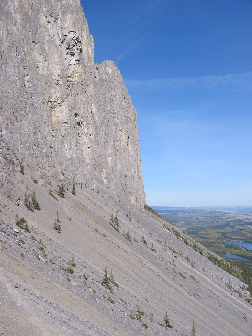
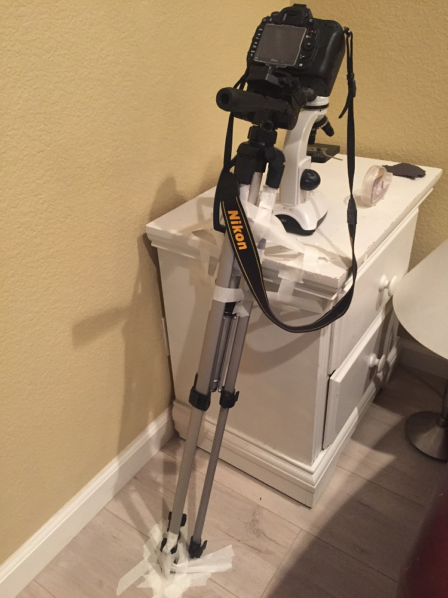
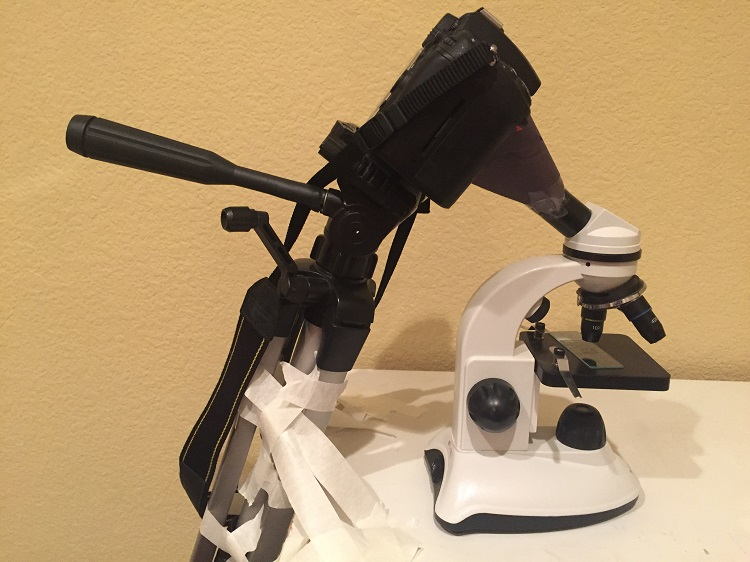
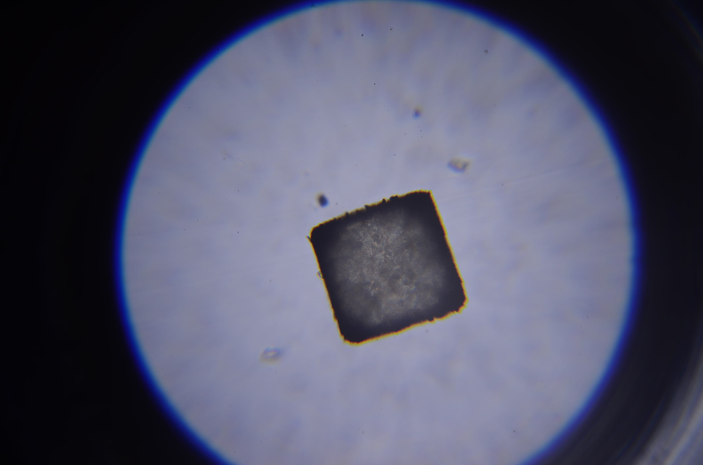
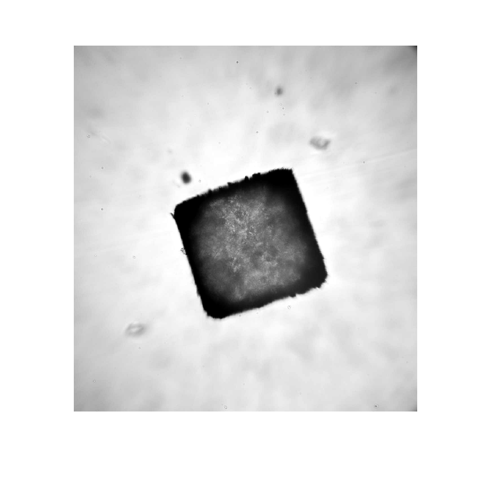
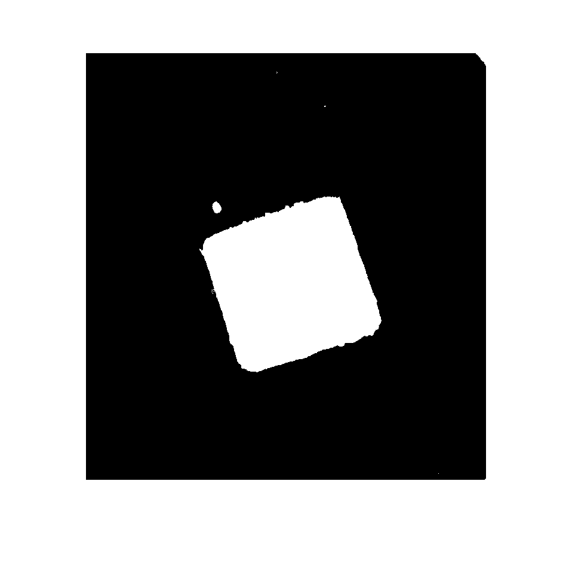
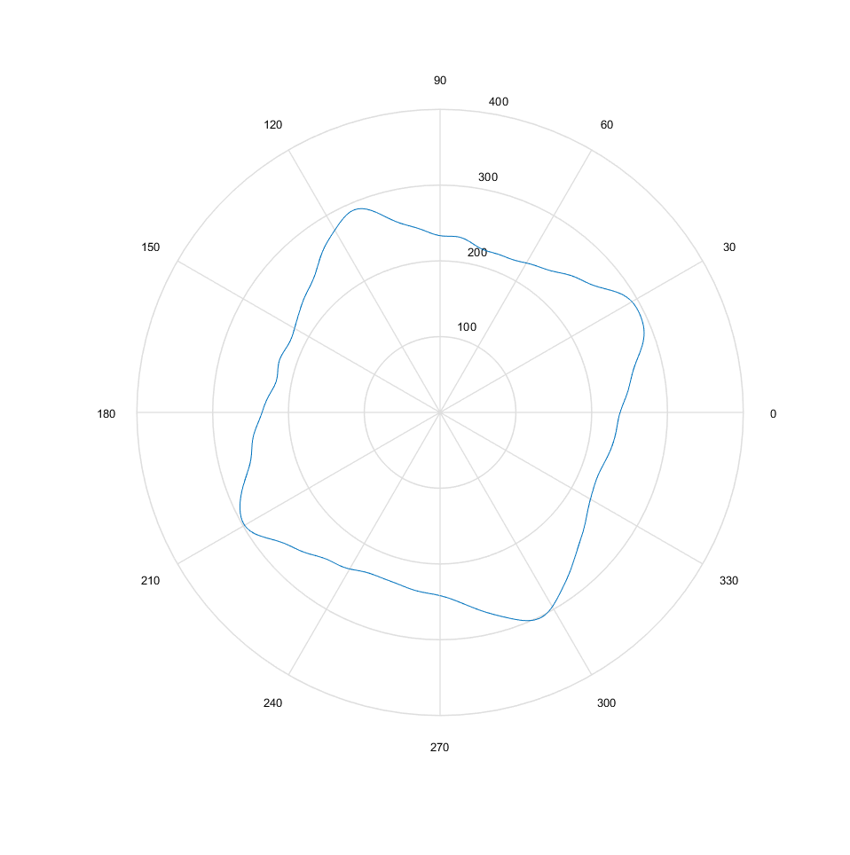
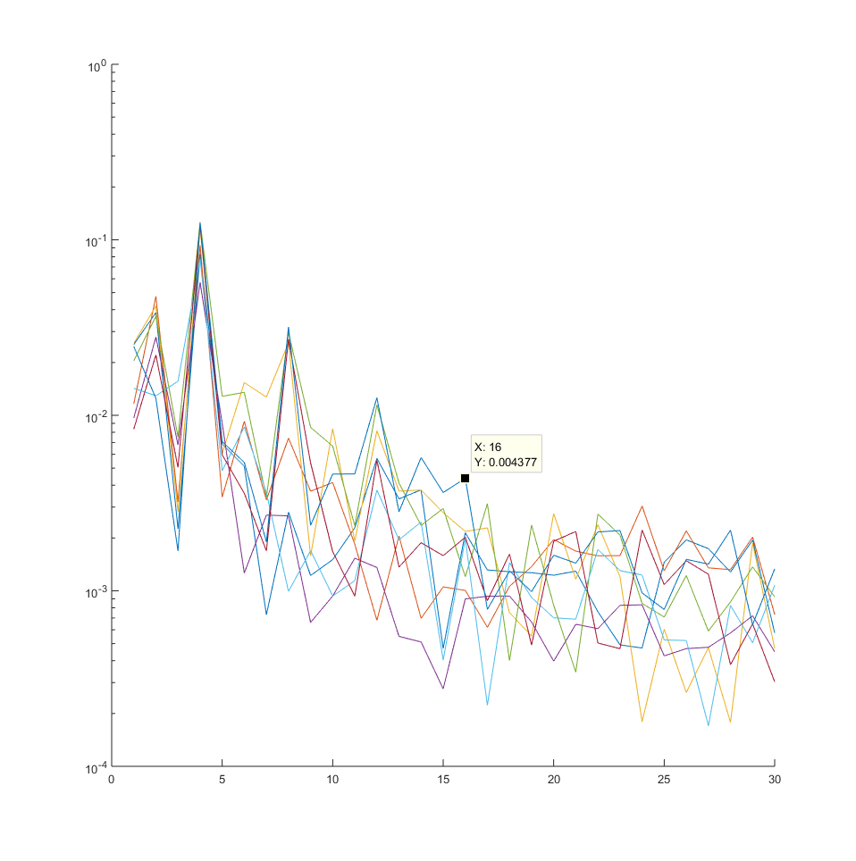
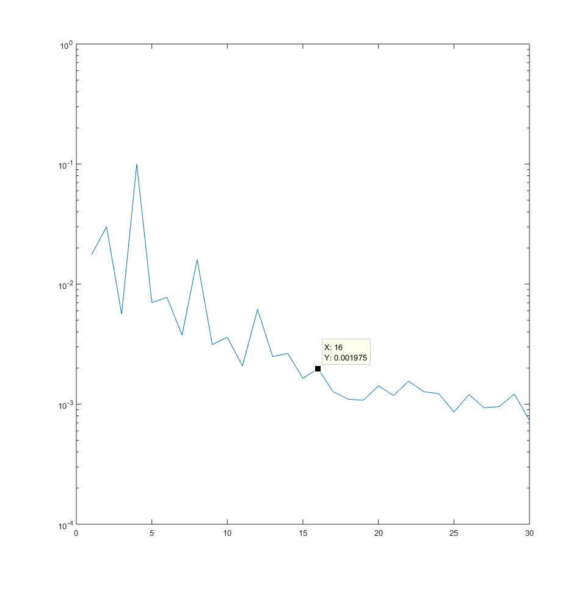

09/19 - This is a problem I have had in my mind for several years now.
Hourglass problem
Description of problem
If you have ever used an hourglass, you should have noticed that the sand collecting on the bottom forms the shape of a cone. When more sand falls onto the tip of the cone, the cone doesn't get steeper---instead, some of it slides down the slopes, such that the steepness of the cone remains approximately constant. In other words, it is the maximum slope that the pile of sand can support without collapsing.The angle from the critical slope to the horizontal angle is known as the
Common sense will tell us that the frictional properties of the granular material will affect the angle of repose. However, the size of the grains should not affect the angle of repose.
Here, we explore how granular shape (sphericity, angularity, and/or roughness) affects the angle of repose.
Interesting geological significance
Above, I mentioned how physics tells us that the size of grains should not affect the angle of repose. (The frictional forces required to hold each particle in its place increase at the same rate as the normal and gravitational forces that threaten to push each particle out of its place.)We can extrapolate this fact into dimensions ranging from fine clay (that must be dry, of course... water causes electrostatic attractions between particles) and enormous boulders.
The angle of repose displays itself prominently in scree and talus fields.

{kind=link}
scree field, Mt. Yamnuska (from Wikipedia)
Perhaps the intricacy of the problem is most obvious upon examination of these scree slopes. Each individual rock is shaped and sized so differently, but when so many of them come together, they accumulate in a way that is incredibly consistent.
Interestingly, this is also what makes this problem so difficult. If the shapes of all the rocks are random, then how could there be different angles of repose? The only chance of determining how granular shape affects the angle of repose is by determining what all these randomly shaped rocks/grains have in common.
Interesting entomological significance
Wikipedia: exploitation of the angle of repose by antlions and wormlionsYoutube - Antlion death trap (National Geographic) [warning, very very scary]
Youtube - Antlion Cone Death Trap (BBC Earth) [warning, very very scary]
Quantification of granular shape
LiteratureWe have some criteria for our method to quantify granular shape: our measure of shape has to be detailed enough to capture actual variance in the average shapes of different types of quasi-random granular shapes, but general enough to actually be able to classify enormously variable granular shapes.
An examination of existing literature is revealing. Measures of granular sphericity are well known and usually involve some examination of the major and minor axes of the grain.
Wadell (1932) proposes a definition of granular roughness by inscribing circles inside the corners of edges.
Krumbein (1941) proposes a chart to visually gauge granular roughness on a scale of 0 to 1.
Ehrlich and Weinberg (1970) propose a method of polar Fourier analysis to quantify granular roundness, angularity, and roughness.
Kaye (1978) and Orford/Whalley (1983) propose methods incorporating fractal dimensionality, similar to the more well known use of fractal dimensionality on seashores.
Modern papers have utilized scanning technologies and more advanced computational techniques to quantify roundness in different ways that utilize the extra dimensionality. Since I don't have access to that technology, I will not consider them.
I have chosen Ehrlich and Weinberg's method of Fourier analysis for the following reasons:
- It is computationally easy to implement. (Wadell's method of inscribed circles is computationally complex, and Krumbein's method of visual analysis would require some sort of machine learning to be efficient.)
- It quantifies shape across various parameters. The Fourier decomposition should allow us to see the magnitude of roughness at different scales. Simply from the Fourier coefficients, the sphericity, angularity, and surface roughness should be apparent.
Here is the math used by Ehrlich and Weinberg in their paper.
Consider the shape of a two-dimensional projection. We describe its shape using the Fourier decomposition \[ R(\theta) = R_0 + \sum_{n=1}^{\infty} R_n \cos(n\theta - \phi_n) \] Suppose that we have $L$ known points on the edge of the shape given by $(x_i,y_i)$ and $1\leq i \leq L$. (Note: $n$ Fourier coordinates require $L>2n$.)
We convert the Cartesian coordinates to polar coordinates using: \[ r_i = \sqrt{(y_i-\overline{y})^2 + (x_i - \overline{x})^2}\\ \theta_i = \arccos\left(\dfrac{x_i}{r_i}\right)\text{ if }y\geq 0\text{ and } \theta_i = 2\pi - \arccos\left(\dfrac{x_i}{r_i}\right)\text{ if }y<0. \] Next, let us reexpress the Fourier composition in terms of $R_n^2 = A_n^2 + B_n^2$: \[ R(\theta) = R_0 + \sum_{n=1}^{\infty}\left(A_n \cos n\theta + B_n \sin n\theta\right)\\ \text{where } A_n = R_n\cos\phi_n \text{ and }B_n = R_n\sin\phi_n. \] Then: (details for this calculation are found in the 1970 paper.) \[ \begin{align*} R_0 &= \dfrac{1}{4\pi} \sum_{i=1}^L (r_{i+1} + r_i)(\theta_{i+1} - \theta_i)\\ \text{and }A_n &= \dfrac{1}{\pi}\sum_{i=1}^L \left( \dfrac{(r_{i+1} - r_i)(\cos n\theta_{i+1} - \cos n\theta_i)}{(\theta_{i+1} - \theta_i)n^2} + \dfrac{r_{i+1}\sin n\theta_{i+1} - r_i \sin n\theta_i}{n}\right )\\ \text{and }B_n &= \dfrac{1}{\pi}\sum_{i=1}^L \left(\dfrac{(r_{i+1} - r_i)(\sin n\theta_{i+1} - \sin n\theta_i)}{(\theta_{i+1} - \theta_i)n^2} - \dfrac{r_{i+1}\cos n\theta_{i+1} - r_i\cos n\theta_i}{n}\right) \end{align*} \] Note: when $i=L,$ it cycles such that $i+1 = 1.$ And of course, $R_n = \sqrt{A_n^2 + B_n^2}.$
Some notes on the image processing:
I have a setup for capturing images of the sand grains. My DSLR takes photos through a student microscope (capable of 40x and 100x magnification). The DSLR lens is removed and the microscope eyepiece is positioned so that the image is projected directly onto the DSLR sensor. Some simple baffles are added to reduce the amount of stray light hitting the sensor.

{kind=link}

{kind=link}
The images are then loaded onto MATLAB. I adjust the image into grayscale, then binary form. Then I use the
Testing the program on salt
{kind=link}
Input image (note the extraneous objects that need to be ignored)

{kind=link}
Adjusted image

{kind=link}
B/W conversion

{kind=link}
Fourier plot (N=30, L~100). Ignore the rotation, that is due to some errors in the code that don't affect the final result.
Salt grains have a very consistent shape (rounded squares), so we should expect to see some similarities in their respective Fourier coefficient plots ($R_n$ vs $n$). Indeed we do:

{kind=link}
The Fourier coefficient plots of eight photographed salt grains (Fourier coefficients are all normalized with $R_0.$

{kind=link}
The average of the above plot. Note the spikes at $n=4,8,12\text{ and }16$. This is consistent with the square shape of salt grains. There are no more spikes at 20, 24, and onward because the corners are rounded and not sharp. Had the corners been sharp, there would be spikes at all multiples of 4.
Next steps
The theoretical prep is all done, now I just need to find sand. I need to have different sands of different grain shapes, but I don't know how significantly the mineral composition of the sand will affect the angle. Are frictional properties actually meaningful at these small scales? If so, then all the sand should be of varying shape but should be of the same type as well. Ideally, I should have some kind of method for smoothing rough sand grains.The measurement of the angle of repose will be conducted as follows: starting with a flat container of sand, the container is incrementally tilted until the entire slope noticeably collapses (sand grains rolling off the slope don't count).
Citations
-
Ehrlich, Robert, and Bernhard Weinberg. "An Exact Method for Characterization of Grain Shape."
Journal of Sedimentary Petrology Vol. 40 (March 1970), 205-212. doi:10.1306/74d71f1e-2b21-11d7-8648000102c1865d. -
Kaye, B. H. "Specification of the ruggedness and/or texture of a fine particle profile by its fractal dimension."
Powder Technology 21 (September/October 1978), 1-16. doi.org/10.1016/0032-5910(78)80103-X. -
Lenz, Kevin. "Yamnuska bottom cliff.jpg."
Wikimedia Commons . 2006. https://commons.wikimedia.org/wiki/File:Yamnuska_bottom_cliff.jpg. -
Orford, J. D., and W. B. Whalley. "The use of the fractal dimension to quantify the morphology of irregular‐shaped particles."
The Journal of the International Association of Sedimentologists 30 (October 1983), 655-668. doi.org/10.1111/j.1365-3091.1983.tb00700.x. -
Resentini, Alberto, Sergio AndÒ, and Eduardo Garzanti. "Quantifying Roundness of Detrital Minerals By Image Analysis: Sediment Transport, Shape Effects, and Provenance Implications."
Journal of Sedimentary Research 88 (February 2018), 276-289. doi.org/10.2110/jsr.2018.12. -
Wadell, Hakon. "Volume, Shape, and Roundness of Rock Particles."
The Journal of Geology 40 (July/August 1932), 443-451. doi.org/10.1086/623964.